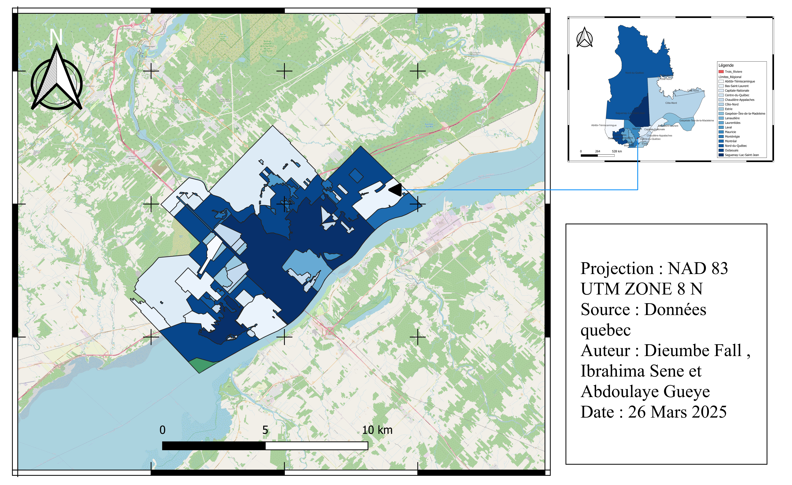

Ce projet de Systèmes d’Information Géographique (SIG) sur le web a pour objectif de concevoir une application interactive permettant d'explorer le réseau cyclable et les parcs urbains de la ville de Trois-Rivières. À travers une carte dynamique, les usagers peuvent visualiser les données géospatiales, analyser la répartition des infrastructures vertes et cyclables, et mieux comprendre l’organisation du territoire. Le projet repose sur l’intégration des technologies modernes telles que HTML, CSS, JavaScript, OpenLayers, Bootstrap et jQuery.
Technologies utilisées : HTML5, CSS3, Bootstrap 5, OpenLayers, JavaScript, GeoJSON
Les données utilisées dans ce projet proviennent de sources ouvertes comme le portail de données ouvertes de la Ville de Trois-Rivières, incluant les fichiers GeoJSON des pistes cyclables, des parcs, des routes, et des points d’intérêt, etc.

Cette carte illustre la localisation géographique de la ville de Trois-Rivières dans son contexte régional.